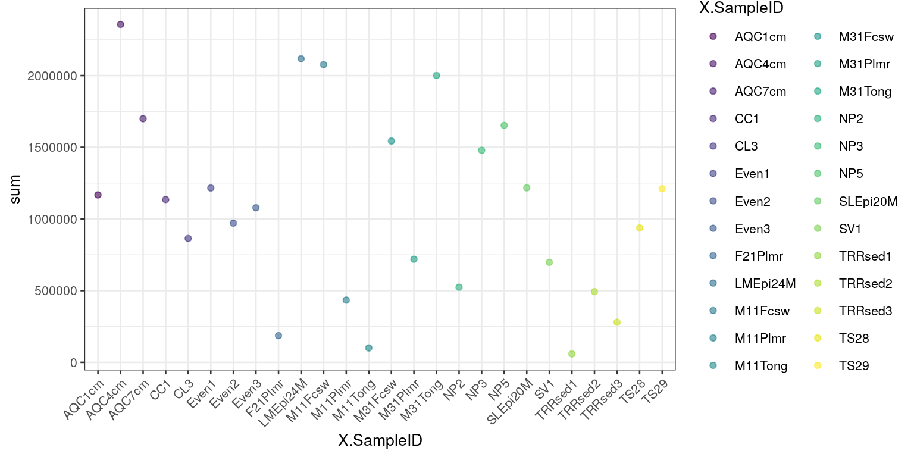

Chapter 4 Quality Control
library(mia)
data("GlobalPatterns")
se <- GlobalPatterns 4.1 Get top taxa and taxonomy
4.1.1 Features
The getTopTaxa can be used for identifying top taxa in the data.
top_features <- getTopTaxa(se, method="median", top=10)
tax_data <- rowData(se)[top_features,taxonomyRanks(se)]
tax_data## DataFrame with 10 rows and 7 columns
## Kingdom Phylum Class Order
## <character> <character> <character> <character>
## 549656 Bacteria Cyanobacteria Chloroplast Stramenopiles
## 331820 Bacteria Bacteroidetes Bacteroidia Bacteroidales
## 317182 Bacteria Cyanobacteria Chloroplast Stramenopiles
## 94166 Bacteria Proteobacteria Gammaproteobacteria Pasteurellales
## 279599 Bacteria Cyanobacteria Nostocophycideae Nostocales
## 158660 Bacteria Bacteroidetes Bacteroidia Bacteroidales
## 329744 Bacteria Actinobacteria Actinobacteria Actinomycetales
## 326977 Bacteria Actinobacteria Actinobacteria Bifidobacteriales
## 248140 Bacteria Bacteroidetes Bacteroidia Bacteroidales
## 550960 Bacteria Proteobacteria Gammaproteobacteria Enterobacteriales
## Family Genus Species
## <character> <character> <character>
## 549656 NA NA NA
## 331820 Bacteroidaceae Bacteroides NA
## 317182 NA NA NA
## 94166 Pasteurellaceae Haemophilus Haemophilusparainflu..
## 279599 Nostocaceae Dolichospermum NA
## 158660 Bacteroidaceae Bacteroides NA
## 329744 ACK-M1 NA NA
## 326977 Bifidobacteriaceae Bifidobacterium Bifidobacteriumadole..
## 248140 Bacteroidaceae Bacteroides Bacteroidescaccae
## 550960 Enterobacteriaceae Providencia NA4.2 Library size
The total counts/sample can be calculated using the
perCellQCMetrics/addPerCellQC from the scater package. The first one
just calculates the values, whereas the latter one directly adds them to the
colData.
library(scater)
perCellQCMetrics(se)## DataFrame with 26 rows and 3 columns
## sum detected total
## <numeric> <numeric> <numeric>
## CL3 864077 6964 864077
## CC1 1135457 7679 1135457
## SV1 697509 5729 697509
## M31Fcsw 1543451 2667 1543451
## M11Fcsw 2076476 2574 2076476
## ... ... ... ...
## TS28 937466 2679 937466
## TS29 1211071 2629 1211071
## Even1 1216137 4213 1216137
## Even2 971073 3130 971073
## Even3 1078241 2776 1078241se <- addPerCellQC(se)
colData(se)## DataFrame with 26 rows and 10 columns
## X.SampleID Primer Final_Barcode Barcode_truncated_plus_T
## <factor> <factor> <factor> <factor>
## CL3 CL3 ILBC_01 AACGCA TGCGTT
## CC1 CC1 ILBC_02 AACTCG CGAGTT
## SV1 SV1 ILBC_03 AACTGT ACAGTT
## M31Fcsw M31Fcsw ILBC_04 AAGAGA TCTCTT
## M11Fcsw M11Fcsw ILBC_05 AAGCTG CAGCTT
## ... ... ... ... ...
## TS28 TS28 ILBC_25 ACCAGA TCTGGT
## TS29 TS29 ILBC_26 ACCAGC GCTGGT
## Even1 Even1 ILBC_27 ACCGCA TGCGGT
## Even2 Even2 ILBC_28 ACCTCG CGAGGT
## Even3 Even3 ILBC_29 ACCTGT ACAGGT
## Barcode_full_length SampleType
## <factor> <factor>
## CL3 CTAGCGTGCGT Soil
## CC1 CATCGACGAGT Soil
## SV1 GTACGCACAGT Soil
## M31Fcsw TCGACATCTCT Feces
## M11Fcsw CGACTGCAGCT Feces
## ... ... ...
## TS28 GCATCGTCTGG Feces
## TS29 CTAGTCGCTGG Feces
## Even1 TGACTCTGCGG Mock
## Even2 TCTGATCGAGG Mock
## Even3 AGAGAGACAGG Mock
## Description sum detected
## <factor> <numeric> <numeric>
## CL3 Calhoun South Carolina Pine soil, pH 4.9 864077 6964
## CC1 Cedar Creek Minnesota, grassland, pH 6.1 1135457 7679
## SV1 Sevilleta new Mexico, desert scrub, pH 8.3 697509 5729
## M31Fcsw M3, Day 1, fecal swab, whole body study 1543451 2667
## M11Fcsw M1, Day 1, fecal swab, whole body study 2076476 2574
## ... ... ... ...
## TS28 Twin #1 937466 2679
## TS29 Twin #2 1211071 2629
## Even1 Even1 1216137 4213
## Even2 Even2 971073 3130
## Even3 Even3 1078241 2776
## total
## <numeric>
## CL3 864077
## CC1 1135457
## SV1 697509
## M31Fcsw 1543451
## M11Fcsw 2076476
## ... ...
## TS28 937466
## TS29 1211071
## Even1 1216137
## Even2 971073
## Even3 1078241The calulated library sizes can be visualized using the plotColData function.
library(ggplot2)
plotColData(se,"sum","X.SampleID", colour_by = "X.SampleID") +
theme(axis.text.x = element_text(angle = 45, hjust=1))

Figure 4.1: Library sizes per sample.
plotColData(se,"sum","SampleType", colour_by = "SampleType") +
theme(axis.text.x = element_text(angle = 45, hjust=1))
Figure 4.2: Library sizes per sample type.
Session Info
R version 4.1.0 (2021-05-18)
Platform: x86_64-pc-linux-gnu (64-bit)
Running under: Ubuntu 20.04.2 LTS
Matrix products: default
BLAS/LAPACK: /usr/lib/x86_64-linux-gnu/openblas-pthread/libopenblasp-r0.3.8.so
locale:
[1] LC_CTYPE=en_US.UTF-8 LC_NUMERIC=C
[3] LC_TIME=en_US.UTF-8 LC_COLLATE=en_US.UTF-8
[5] LC_MONETARY=en_US.UTF-8 LC_MESSAGES=C
[7] LC_PAPER=en_US.UTF-8 LC_NAME=C
[9] LC_ADDRESS=C LC_TELEPHONE=C
[11] LC_MEASUREMENT=en_US.UTF-8 LC_IDENTIFICATION=C
attached base packages:
[1] stats4 stats graphics grDevices utils datasets methods
[8] base
other attached packages:
[1] scater_1.21.2 ggplot2_3.3.5
[3] scuttle_1.3.0 mia_1.1.7
[5] TreeSummarizedExperiment_2.1.3 Biostrings_2.61.1
[7] XVector_0.33.0 SingleCellExperiment_1.15.1
[9] SummarizedExperiment_1.23.1 Biobase_2.53.0
[11] GenomicRanges_1.45.0 GenomeInfoDb_1.29.3
[13] IRanges_2.27.0 S4Vectors_0.31.0
[15] BiocGenerics_0.39.1 MatrixGenerics_1.5.1
[17] matrixStats_0.59.0 BiocStyle_2.21.3
[19] rebook_1.3.0
loaded via a namespace (and not attached):
[1] ggbeeswarm_0.6.0 colorspace_2.0-2
[3] ellipsis_0.3.2 BiocNeighbors_1.11.0
[5] farver_2.1.0 bit64_4.0.5
[7] fansi_0.5.0 decontam_1.13.0
[9] splines_4.1.0 codetools_0.2-18
[11] sparseMatrixStats_1.5.0 cachem_1.0.5
[13] knitr_1.33 jsonlite_1.7.2
[15] cluster_2.1.2 graph_1.71.2
[17] BiocManager_1.30.16 compiler_4.1.0
[19] assertthat_0.2.1 Matrix_1.3-4
[21] fastmap_1.1.0 lazyeval_0.2.2
[23] BiocSingular_1.9.1 htmltools_0.5.1.1
[25] tools_4.1.0 rsvd_1.0.5
[27] gtable_0.3.0 glue_1.4.2
[29] GenomeInfoDbData_1.2.6 reshape2_1.4.4
[31] dplyr_1.0.7 Rcpp_1.0.7
[33] jquerylib_0.1.4 vctrs_0.3.8
[35] ape_5.5 nlme_3.1-152
[37] DECIPHER_2.21.0 DelayedMatrixStats_1.15.0
[39] xfun_0.24 stringr_1.4.0
[41] beachmat_2.9.0 lifecycle_1.0.0
[43] irlba_2.3.3 XML_3.99-0.6
[45] zlibbioc_1.39.0 MASS_7.3-54
[47] scales_1.1.1 parallel_4.1.0
[49] yaml_2.2.1 memoise_2.0.0
[51] gridExtra_2.3 sass_0.4.0
[53] stringi_1.7.2 RSQLite_2.2.7
[55] highr_0.9 ScaledMatrix_1.1.0
[57] tidytree_0.3.4 permute_0.9-5
[59] filelock_1.0.2 BiocParallel_1.27.2
[61] rlang_0.4.11 pkgconfig_2.0.3
[63] bitops_1.0-7 evaluate_0.14
[65] lattice_0.20-44 purrr_0.3.4
[67] labeling_0.4.2 treeio_1.17.2
[69] CodeDepends_0.6.5 cowplot_1.1.1
[71] bit_4.0.4 tidyselect_1.1.1
[73] plyr_1.8.6 magrittr_2.0.1
[75] bookdown_0.22 R6_2.5.0
[77] generics_0.1.0 DelayedArray_0.19.1
[79] DBI_1.1.1 withr_2.4.2
[81] mgcv_1.8-36 pillar_1.6.1
[83] RCurl_1.98-1.3 tibble_3.1.2
[85] dir.expiry_1.1.0 crayon_1.4.1
[87] utf8_1.2.1 rmarkdown_2.9
[89] viridis_0.6.1 grid_4.1.0
[91] blob_1.2.1 vegan_2.5-7
[93] digest_0.6.27 tidyr_1.1.3
[95] munsell_0.5.0 DirichletMultinomial_1.35.0
[97] beeswarm_0.4.0 viridisLite_0.4.0
[99] vipor_0.4.5 bslib_0.2.5.1